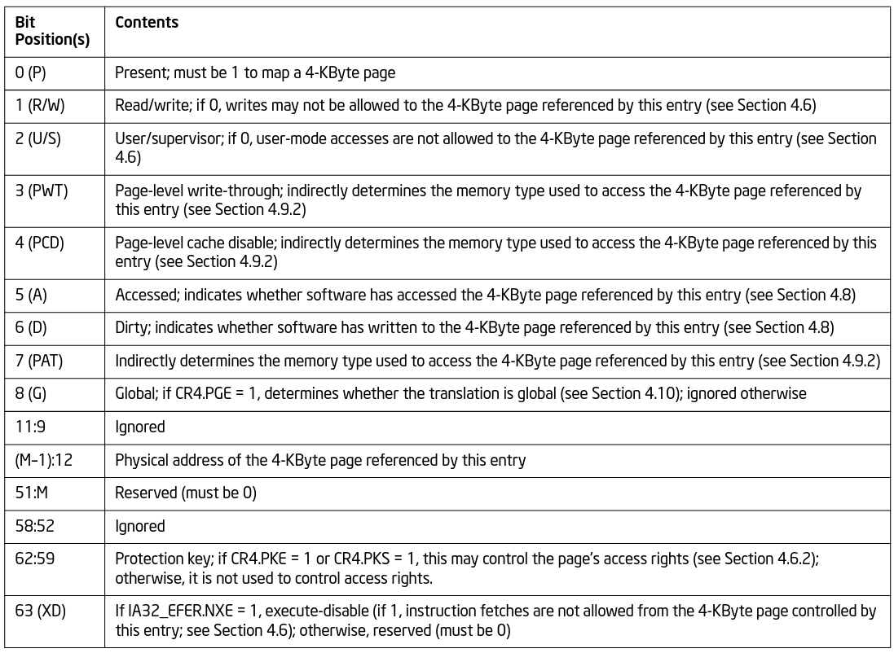

X86-64架构下一个网卡中断的处理流程
Table of Contents
本文以一个网卡中断的处理过程来研究X86-64的中断管理，这个调用流程如下：
=> e1000_intr => __handle_irq_event_percpu => handle_irq_event => handle_fasteoi_irq => __common_interrupt => common_interrupt => asm_common_interrupt => e1000_clean_rx_irq => e1000_clean => __napi_poll => net_rx_action => handle_softirqs => __irq_exit_rcu => common_interrupt => asm_common_interrupt => finish_task_switch.isra.0 => __schedule => schedule => worker_thread => kthread => ret_from_fork => ret_from_fork_asm
1. 中断向量表初始化
X86-64的外部中断通过idt_setup_apic_and_irq_gates函数来注册，但是外部中断表本身的内容通过irq_entries_start符号描述。下面分这两方面来介绍X86-64的初始化。
1.1. 外部中断向量表构造
下面的汇编代码描述了外部中断向量表的内容：
.align IDT_ALIGN
SYM_CODE_START(irq_entries_start)
vector=FIRST_EXTERNAL_VECTOR
.rept NR_EXTERNAL_VECTORS
UNWIND_HINT_IRET_REGS
0 :
ENDBR
.byte 0x6a, vector
jmp asm_common_interrupt
/* Ensure that the above is IDT_ALIGN bytes max */
.fill 0b + IDT_ALIGN - ., 1, 0xcc
vector = vector+1
.endr
SYM_CODE_END(irq_entries_start)
这里NR_EXTERNAL_VECTORS以及FIRST_EXTERNAL_VECTOR被如下方式定义：
/* * Posted interrupt notification vector for all device MSIs delivered to * the host kernel. */ #define POSTED_MSI_NOTIFICATION_VECTOR 0xeb /* * IDT vectors usable for external interrupt sources start at 0x20. * (0x80 is the syscall vector, 0x30-0x3f are for ISA) */ #define FIRST_EXTERNAL_VECTOR 0x20 #ifdef CONFIG_X86_LOCAL_APIC #define FIRST_SYSTEM_VECTOR POSTED_MSI_NOTIFICATION_VECTOR #else #define FIRST_SYSTEM_VECTOR NR_VECTORS #endif #define NR_EXTERNAL_VECTORS (FIRST_SYSTEM_VECTOR - FIRST_EXTERNAL_VECTOR)
X86-64架构对于中断号的使用是划分了范围的，0x20是外部中断向量的起始位置，所谓外部中断源是指硬件设备（如键盘、网卡、定时器等）通过中断控制器（如 PIC、APIC或Local APIC）触发的中断，这些外部设备都需要通过中断控制器再中断CPU。
现代x86-64架构一般都配置了CONFIG_X86_LOCAL_APIC，所以FIRST_SYSTEM_VECTOR就是POSTED_MSI_NOTIFICATION_VECTOR，POSTED_MSI_NOTIFICATION_VECTOR（向量号 0xEB）主要用在中断虚拟机化里，当设备通过 MSI（Message Signaled Interrupts）触发中断时，如果设备的中断目标是虚拟机（vCPU），并且这个vCPU正在运行，且它支持APICv，APIC会直接通过PI机制将中断注入到目标虚拟机。如果目标虚拟机vCPU未运行（例如调度到宿主机的其他线程上），则会触发POSTED_MSI_NOTIFICATION_VECTOR（0xEB）来通知宿主机，传统中断处理中，当设备向虚拟机发送中断时，通常需要以下步骤，首先触发中断导致虚拟机VM-Exit。然后宿主机内核处理中断后，再注入到虚拟机。这种方法会带来大量的性能开销，尤其是I/O密集型工作负载（如网卡或存储设备）会产生频繁的中断。使用POSTED_MSI_NOTIFICATION_VECTOR和PI机制后，如果目标vCPU正在运行，则直接将中断注入虚拟机，完全避免VM-Exit。如果目标vCPU未运行，仅在必要时通知宿主机处理，这大幅减少了VM-Exit的次数。
所以[0x20, 0xeb)共计203个向量号用于外部设备中断，低于0x20的中断号一般用于处理CPU内部异常，比如除0错误，调试以及Page Fault等，NMI使用的向量号也低于0x20。
使用.byte硬编码push指令的方式
最后反汇编vmlinux查看被编译出来的irq_entries_start符号处的指令，就类似下面的模式：
ffffffff81e00230 <irq_entries_start>: ffffffff81e00230: f3 0f 1e fa endbr64 ffffffff81e00234: 6a 20 push $0x20 ffffffff81e00236: e9 05 13 00 00 jmp ffffffff81e01540 <asm_common_interrupt> ffffffff81e0023b: cc int3 ffffffff81e0023c: cc int3 ffffffff81e0023d: cc int3 ffffffff81e0023e: cc int3 ffffffff81e0023f: cc int3 ffffffff81e00240: f3 0f 1e fa endbr64 ffffffff81e00244: 6a 21 push $0x21 ffffffff81e00246: e9 f5 12 00 00 jmp ffffffff81e01540 <asm_common_interrupt> ffffffff81e0024b: cc int3 ffffffff81e0024c: cc int3 ffffffff81e0024d: cc int3 ffffffff81e0024e: cc int3 ffffffff81e0024f: cc int3
每个中断句柄入口的代码都是相似的几条指令，唯一的不同就是push到栈上的向量号不一样。注意每个中断句柄的入口，其第一条指令都是endbr64，这是因为内核开启了X86_KERNEL_IBT配置的缘故，该指令的作用是标记合法的间接跳转目标，确保控制流的安全性。所谓间接跳转，比如间接调用或中断处理程序入口（因为硬件会自动往中断句柄跳）。如果跳转到没有endbr64的地址，处理器会触发异常（#CP: Control Protection Exception），从而防御攻击。
.align IDT_ALIGN指明了接下来的汇编符号（代码）要对齐到某个字节，现代Intel处理器一般启用了IBT(Intel CET，Control-flow Enforcement Technology)，这是一种安全机制，用于防范间接分支跳转攻击，这些攻击会劫持程序的控制流，跳转到恶意代码或利用程序中合法代码片段进行恶意行为，启用了这个配置，就会对齐到16字节处。
.rept宏指令表示在它们之间的指令需要重复编出NR_EXTERNAL_VECTORS次.
1.2. 注册外部中断向量表
本节开始分析注册中断的函数idt_setup_apic_and_irq_gates：
/**
* idt_setup_apic_and_irq_gates - Setup APIC/SMP and normal interrupt gates
*/
void __init idt_setup_apic_and_irq_gates(void)
{
int i = FIRST_EXTERNAL_VECTOR;
void *entry;
idt_setup_from_table(idt_table, apic_idts, ARRAY_SIZE(apic_idts), true);
for_each_clear_bit_from(i, system_vectors, FIRST_SYSTEM_VECTOR) {
entry = irq_entries_start + IDT_ALIGN * (i - FIRST_EXTERNAL_VECTOR);
set_intr_gate(i, entry);
}
#ifdef CONFIG_X86_LOCAL_APIC
for_each_clear_bit_from(i, system_vectors, NR_VECTORS) {
/*
* Don't set the non assigned system vectors in the
* system_vectors bitmap. Otherwise they show up in
* /proc/interrupts.
*/
entry = spurious_entries_start + IDT_ALIGN * (i - FIRST_SYSTEM_VECTOR);
set_intr_gate(i, entry);
}
#endif
/* Map IDT into CPU entry area and reload it. */
idt_map_in_cea();
load_idt(&idt_descr);
/* Make the IDT table read only */
set_memory_ro((unsigned long)&idt_table, 1);
idt_setup_done = true;
}
该函数主要分为几个部分，第一个部分是将apic_idts里的中断向量拷贝到idt_table里，第二部分针对前面还没有设置的向量，通过set_intr_gate继续往idt_table里设置，以上两部分设置完后其实都还是在内存里，所以最后的第三部分就是通过idt_map_in_cea将这个表设置好映射关系，并将这个中断表通过lidt指令加载到idt寄存器。
先分析第一部分，idt_setup_from_table函数：
arch/x86/kernel/idt.c
static __init void
idt_setup_from_table(gate_desc *idt, const struct idt_data *t, int size, bool sys)
{
gate_desc desc;
for (; size > 0; t++, size--) {
idt_init_desc(&desc, t);
write_idt_entry(idt, t->vector, &desc);
if (sys)
set_bit(t->vector, system_vectors);
}
}
这里首先介绍/分析apic_idts表：
arch/x86/kernel/idt.c
/*
* The APIC and SMP idt entries
*/
static const __initconst struct idt_data apic_idts[] = {
#ifdef CONFIG_SMP
INTG(RESCHEDULE_VECTOR, asm_sysvec_reschedule_ipi),
INTG(CALL_FUNCTION_VECTOR, asm_sysvec_call_function),
INTG(CALL_FUNCTION_SINGLE_VECTOR, asm_sysvec_call_function_single),
INTG(REBOOT_VECTOR, asm_sysvec_reboot),
#endif
#ifdef CONFIG_X86_THERMAL_VECTOR
INTG(THERMAL_APIC_VECTOR, asm_sysvec_thermal),
#endif
#ifdef CONFIG_X86_MCE_THRESHOLD
INTG(THRESHOLD_APIC_VECTOR, asm_sysvec_threshold),
#endif
#ifdef CONFIG_X86_MCE_AMD
INTG(DEFERRED_ERROR_VECTOR, asm_sysvec_deferred_error),
#endif
#ifdef CONFIG_X86_LOCAL_APIC
INTG(LOCAL_TIMER_VECTOR, asm_sysvec_apic_timer_interrupt),
INTG(X86_PLATFORM_IPI_VECTOR, asm_sysvec_x86_platform_ipi),
# if IS_ENABLED(CONFIG_KVM)
INTG(POSTED_INTR_VECTOR, asm_sysvec_kvm_posted_intr_ipi),
INTG(POSTED_INTR_WAKEUP_VECTOR, asm_sysvec_kvm_posted_intr_wakeup_ipi),
INTG(POSTED_INTR_NESTED_VECTOR, asm_sysvec_kvm_posted_intr_nested_ipi),
# endif
# ifdef CONFIG_IRQ_WORK
INTG(IRQ_WORK_VECTOR, asm_sysvec_irq_work),
# endif
INTG(SPURIOUS_APIC_VECTOR, asm_sysvec_spurious_apic_interrupt),
INTG(ERROR_APIC_VECTOR, asm_sysvec_error_interrupt),
# ifdef CONFIG_X86_POSTED_MSI
INTG(POSTED_MSI_NOTIFICATION_VECTOR, asm_sysvec_posted_msi_notification),
# endif
#endif
};
以asm_sysvec_reschedule_ipi为例分析它的实现：
DECLARE_IDTENTRY(RESCHEDULE_VECTOR, sysvec_reschedule_ipi);
而DECLARE_IDTENTRY会依据当前编译单元是.c文件或.S文件有不同的定义，对于.c来说：
arch/x86/include/asm/idtentry.h /** * DECLARE_IDTENTRY - Declare functions for simple IDT entry points * No error code pushed by hardware * @vector: Vector number (ignored for C) * @func: Function name of the entry point * * Declares four functions: * - The ASM entry point: asm_##func * - The XEN PV trap entry point: xen_##func (maybe unused) * - The C handler called from the FRED event dispatcher (maybe unused) * - The C handler called from the ASM entry point * * Note: This is the C variant of DECLARE_IDTENTRY(). As the name says it * declares the entry points for usage in C code. There is an ASM variant * as well which is used to emit the entry stubs in entry_32/64.S. */ #define DECLARE_IDTENTRY(vector, func) \ asmlinkage void asm_##func(void); \ asmlinkage void xen_asm_##func(void); \ void fred_##func(struct pt_regs *regs); \ __visible void func(struct pt_regs *regs)
以上只是给出了比如asm_sysvec_reschedule_ipi这样符号声明，但是对于编译汇编文件.S时再给出asm_sysvec_reschedule_ipi的定义：
arch/x86/include/asm/idtentry.h #else /* !__ASSEMBLER__ */ /* * The ASM variants for DECLARE_IDTENTRY*() which emit the ASM entry stubs. */ #define DECLARE_IDTENTRY(vector, func) \ idtentry vector asm_##func func has_error_code=0
identry是实现在arch/x86/entry/entry_64.S里的宏，用来给出参数asm_##func（也就是asm_sysvec_reschedule_ipi）符号的定义，idtentry实际抽象出了所有中断entry时需要做的公共动作，这样定义出的asm_sysvec_reschedule_ipi可以理解为中断发生后的第一个要跳转到的地址，具体里面的代码留待后面分析中断执行时再细节分析，这里可以通过反汇编vmlinux先搂一眼asm_sysvec_reschedule_ipi的指令级实现：
ffffffff81e01630 <asm_sysvec_reschedule_ipi>: ffffffff81e01630: f3 0f 1e fa endbr64 ffffffff81e01634: 90 nop ffffffff81e01635: 90 nop ffffffff81e01636: 90 nop ffffffff81e01637: fc cld ffffffff81e01638: 6a ff push $0xffffffffffffffff ffffffff81e0163a: e8 f1 05 00 00 call ffffffff81e01c30 <error_entry> ffffffff81e0163f: 48 89 c4 mov %rax,%rsp ffffffff81e01642: 48 89 e7 mov %rsp,%rdi ffffffff81e01645: e8 36 35 ef ff call ffffffff81cf4b80 <sysvec_reschedule_ipi> ffffffff81e0164a: e9 21 07 00 00 jmp ffffffff81e01d70 <error_return> ffffffff81e0164f: 90 nop
而asm_sysvec_reboot具有类似的结构：
ffffffff81e01650 <asm_sysvec_reboot>: ffffffff81e01650: f3 0f 1e fa endbr64 ffffffff81e01654: 90 nop ffffffff81e01655: 90 nop ffffffff81e01656: 90 nop ffffffff81e01657: fc cld ffffffff81e01658: 6a ff push $0xffffffffffffffff ffffffff81e0165a: e8 d1 05 00 00 call ffffffff81e01c30 <error_entry> ffffffff81e0165f: 48 89 c4 mov %rax,%rsp ffffffff81e01662: 48 89 e7 mov %rsp,%rdi ffffffff81e01665: e8 86 34 ef ff call ffffffff81cf4af0 <sysvec_reboot> ffffffff81e0166a: e9 01 07 00 00 jmp ffffffff81e01d70 <error_return> ffffffff81e0166f: 90 nop
可以想见，error_entry里就会有具体中断句柄（sysvec_reschedule_ipi/sysvec_reboot等）进入前的现场保存，而error_return里会有中断句柄返回前的现场恢复操作，而call sysvec_reschedule_ipi，其实就是宏汇编调用链：
identry->idtentry_body->call \cfunc，
这里cfunc就是identry的第三个参数cfunc，在这个例子下就是上面DECLARE_IDTENTRY的第二个参数sysvec_reschedule_ipi：
DECLARE_IDTENTRY(RESCHEDULE_VECTOR, sysvec_reschedule_ipi);
所以才有了上面贴的反汇编里有指令call sysvec_reschedule_ipi，那么这个符号又是哪里定义的呢？如下：
arch/x86/kernel/smp.c
DEFINE_IDTENTRY_SYSVEC_SIMPLE(sysvec_reschedule_ipi)
{
apic_eoi();
trace_reschedule_entry(RESCHEDULE_VECTOR);
inc_irq_stat(irq_resched_count);
scheduler_ipi();
trace_reschedule_exit(RESCHEDULE_VECTOR);
}
arch/x86/include/asm/idtentry.h
#define DEFINE_IDTENTRY_SYSVEC_SIMPLE(func) \
static __always_inline void __##func(struct pt_regs *regs); \
\
static __always_inline void instr_##func(struct pt_regs *regs) \
{ \
__irq_enter_raw(); \
__##func (regs); \
__irq_exit_raw(); \
} \
\
__visible noinstr void func(struct pt_regs *regs) \
{ \
irqentry_state_t state = irqentry_enter(regs); \
\
kvm_set_cpu_l1tf_flush_l1d(); \
instrumentation_begin(); \
instr_##func (regs); \
instrumentation_end(); \
irqentry_exit(regs, state); \
} \
\
void fred_##func(struct pt_regs *regs) \
{ \
instr_##func (regs); \
} \
\
static __always_inline void __##func(struct pt_regs *regs)
注意这里最后的__##func的函数体就是前面的：
{
apic_eoi();
trace_reschedule_entry(RESCHEDULE_VECTOR);
inc_irq_stat(irq_resched_count);
scheduler_ipi();
trace_reschedule_exit(RESCHEDULE_VECTOR);
}
相当于说identry宏汇编里面会封装所有中断处理的公共逻辑比如保持/恢复现场，而具体的业务逻辑 （具体的某个中断号对应的处理逻辑）则由传进去的cfunc决定，这里是sysvec_reschedule_ipi符号， 类似使用这种的还有很多比如：
DECLARE_IDTENTRY_SYSVEC(REBOOT_VECTOR, sysvec_reboot);
这些逻辑也体现了一种封装/继承的思想，未来打算将某个向量号XXX，分配给某个具体函数funcxxx处理时只需写：
DECLARE_IDTENTRY_SYSVEC(XXX, funcxxx)
同时用类似DEFINE_IDTENTRY_SYSVEC_SIMPLE这样的宏来给出其具体的业务逻辑：
DEFINE_IDTENTRY_SYSVEC_SIMPLE(funcxxx)
对于sysvec_reschedule_ipi的具体业务逻辑就是scheduler_ipi，而至于公共的中断处理逻辑，如下宏调用链会替我们操心处理好（并定义出相关符号可以调用）：
DECLARE_IDTENTRY_SYSVEC->DECLARE_IDTENTRY->idtentry
具体执行的这些细节留待后面中断执行时再分析，这里还是聚焦中断向量表的注册。
分析到目前，就是想回答说类似asm_sysvec_reschedule_ipi/asm_sysvec_reboot等这样的句柄有了定义（addr），那么INTG的实现就可以赋值了：
#define G(_vector, _addr, _ist, _type, _dpl, _segment) \
{ \
.vector = _vector, \
.bits.ist = _ist, \
.bits.type = _type, \
.bits.dpl = _dpl, \
.bits.p = 1, \
.addr = _addr, \
.segment = _segment, \
}
/* Interrupt gate */
#define INTG(_vector, _addr) \
G(_vector, _addr, DEFAULT_STACK, GATE_INTERRUPT, DPL0, __KERNEL_CS)
这里比较关键的就是跳转地址给到了idt_data::addr，这样apic_idts表的内容就构造完了，回过头来看，apic_idts里其实就是除开0-31的cpu内部异常以及32-NR_EXTERNAL_VECTORS的外部中断的系统向量，主要是内核用来管理的比如重调度，让所有cpu执行某个函数等。
再回到idt_setup_apic_and_irq_gates->idt_setup_from_table函数，这里再贴下：
static __init void
idt_setup_from_table(gate_desc *idt, const struct idt_data *t, int size, bool sys)
{
gate_desc desc;
for (; size > 0; t++, size--) {
idt_init_desc(&desc, t);
write_idt_entry(idt, t->vector, &desc);
if (sys)
set_bit(t->vector, system_vectors);
}
}
对于apic_idts里的所有条目，都要调用相应的函数进行处理，每个条目作为输入调用idt_init_desc函数：
static inline void idt_init_desc(gate_desc *gate, const struct idt_data *d)
{
unsigned long addr = (unsigned long) d->addr;
gate->offset_low = (u16) addr;
gate->segment = (u16) d->segment;
gate->bits = d->bits;
gate->offset_middle = (u16) (addr >> 16);
#ifdef CONFIG_X86_64
gate->offset_high = (u32) (addr >> 32);
gate->reserved = 0;
#endif
}
这里可以看到，主要的逻辑是地址需要转换成low/middle/high部分，其它都是拷贝赋值，设置好gate_desc后，就调用write_idt_entry将这个中断描述符拷贝到全局表idt_table里，其实际实现就是native_write_idt_entry：
static inline void native_write_idt_entry(gate_desc *idt, int entry, const gate_desc *gate)
{
memcpy(&idt[entry], gate, sizeof(*gate));
}
这里entry传入的就是中断号，它也指明了应该将这个中断描述符拷贝到idt_table里的哪个位置。最后system_vectors是一个全局的bitmap，它记录了哪些中断已经被设置，并且主要针对sys vector（系统向量）才设置为true，也就是apic_idts里的向量。
继续往下看：
for_each_clear_bit_from(i, system_vectors, FIRST_SYSTEM_VECTOR) {
entry = irq_entries_start + IDT_ALIGN * (i - FIRST_EXTERNAL_VECTOR);
set_intr_gate(i, entry);
}
这段代码主要是针对从第一个外部向量FIRST_SYSTEM_VECTOR开始，如果在system_vectors里还没有设置的话，就将irq_entries_start起始的向量条目的地址通过set_intr_gate设置到idt_table里：
static __init void set_intr_gate(unsigned int n, const void *addr)
{
struct idt_data data;
init_idt_data(&data, n, addr);
idt_setup_from_table(idt_table, &data, 1, false);
}
这里通过init_idt_data初始化一个idt_data，然后调用前面介绍过的idt_setup_from_table将irq_entries_start里的中断句柄也设置到idt_table里了，只不过注意这里最后一个参数是false，因为这是外部中断了，不是系统向量。
再往下的代码，是针对从i开始，在system_vectors里还没有设置向量的，要设置一个伪中断向量处理函数到idt_table，以作为一个兜底的处理手段，如果某个中断向量没有被内核分配给实际设备驱动（比如硬件根本没有使用这个向量），但硬件/芯片组错误地触发了这个中断，就会走到common_spurious->spurious_interrupt 这个入口。如果没有这个处理，CPU接到未注册向量的中断时会导致异常（或直接挂死），所以需要有一个安全的默认处理逻辑来“吃掉”它。比如某些老硬件、总线、电气干扰可能导致错误中断信号。在handle_spurious_interrupt里，内核不会尝试去真正处理这个中断，而是记录一次spurious interrupt计数（方便/proc/interrupts统计）。通常直接返回，不触发调度，也不应答给具体驱动。某些平台可能会尝试向APIC发送End-Of-Interrupt(EOI)以防止中断卡死。
spurious_entries_start定义如下：
./arch/x86/include/asm/idtentry.h
SYM_CODE_START(spurious_entries_start)
vector=FIRST_SYSTEM_VECTOR
.rept NR_SYSTEM_VECTORS
UNWIND_HINT_IRET_REGS
0 :
ENDBR
.byte 0x6a, vector
jmp asm_spurious_interrupt
/* Ensure that the above is IDT_ALIGN bytes max */
.fill 0b + IDT_ALIGN - ., 1, 0xcc
vector = vector+1
.endr
SYM_CODE_END(spurious_entries_start)
asm_spurious_interrupt类似前面定义符号asm_sysvec_reschedule_ipi，在编译C文件时只有声明：
arch/x86/include/asm/idtentry.h DECLARE_IDTENTRY_IRQ(X86_TRAP_OTHER, spurious_interrupt); #define DECLARE_IDTENTRY_IRQ(vector, func) \ DECLARE_IDTENTRY_ERRORCODE(vector, func) #define DECLARE_IDTENTRY_ERRORCODE(vector, func) \ asmlinkage void asm_##func(void); \ asmlinkage void xen_asm_##func(void); \ __visible void func(struct pt_regs *regs, unsigned long error_code)
而在汇编.S文件时，才给出这个符号的定义：
arch/x86/include/asm/idtentry.h #define DECLARE_IDTENTRY_ERRORCODE(vector, func) \ idtentry vector asm_##func func has_error_code=1
这和前面介绍ipi中断时类似。
下一个要重点分析的就是idt_map_in_cea函数：
static void __init idt_map_in_cea(void)
{
/*
* Set the IDT descriptor to a fixed read-only location in the cpu
* entry area, so that the "sidt" instruction will not leak the
* location of the kernel, and to defend the IDT against arbitrary
* memory write vulnerabilities.
*/
cea_set_pte(CPU_ENTRY_AREA_RO_IDT_VADDR, __pa_symbol(idt_table),
PAGE_KERNEL_RO);
idt_descr.address = CPU_ENTRY_AREA_RO_IDT;
}
这里首先介绍一个宏CPU_ENTRY_AREA_RO_IDT_VADDR：
arch/x86/include/asm/pgtable_areas.h #define CPU_ENTRY_AREA_RO_IDT_VADDR ((void *)CPU_ENTRY_AREA_RO_IDT) /* Single page reserved for the readonly IDT mapping: */ #define CPU_ENTRY_AREA_RO_IDT CPU_ENTRY_AREA_BASE
arch/x86/include/asm/pgtable_64_types.h #define CPU_ENTRY_AREA_BASE (CPU_ENTRY_AREA_PGD << P4D_SHIFT) #define CPU_ENTRY_AREA_PGD _AC(-4, UL) #define P4D_SHIFT 39
也就是说，CPU_ENTRY_AREA_RO_IDT_VADDR最后的值就是0xfffffe0000000000，这是一个虚拟地址，x86-64下虚拟地址的分布介绍在Documentation/arch/x86/x86_64/mm.rst文件里，比如0000000000000000-00007fffffffefff共计128TB是用户空间的虚拟内存。而ffffc90000000000-ffffe8ffffffffff共计32TB是内核的vmalloc/ioremap空间了。
回到CPU_ENTRY_AREA_RO_IDT_VADDR（fffffe0000000000），fffffe0000000000-fffffe7fffffffff的512GB是cpu_entry_area mapping区域，这个区域就是提供类似idt表，可以进入中断处理代码，中断可以在用户态程序运行时产生，所以它是Page-Global页，这样的页用户态和内核态都可以访问，并且在任务切换或者写cr3时，page global的页不会刷tlb，也就是这样的页是固定映射，而cea_set_pte函数正是在完成这样的映射：
void cea_set_pte(void *cea_vaddr, phys_addr_t pa, pgprot_t flags)
{
unsigned long va = (unsigned long) cea_vaddr;
pte_t pte = pfn_pte(pa >> PAGE_SHIFT, flags);
/*
* The cpu_entry_area is shared between the user and kernel
* page tables. All of its ptes can safely be global.
* _PAGE_GLOBAL gets reused to help indicate PROT_NONE for
* non-present PTEs, so be careful not to set it in that
* case to avoid confusion.
*/
if (boot_cpu_has(X86_FEATURE_PGE) &&
(pgprot_val(flags) & _PAGE_PRESENT))
pte = pte_set_flags(pte, _PAGE_GLOBAL);
set_pte_vaddr(va, pte);
}
整个函数是在设置各级页表的页表项内容，以完成虚拟地址到idt_table所在物理地址的映射，要映射到idt_table的物理地址，那么必须先知道idt_table的物理地址，这通过宏__pa_symbol做到：
arch/x86/include/asm/page.h #define __pa_symbol(x) \ __phys_addr_symbol(__phys_reloc_hide((unsigned long)(x)))
arch/x86/include/asm/page_64.h #define __phys_addr_symbol(x) \ ((unsigned long)(x) - __START_KERNEL_map + phys_base)
这里涉及到两个关键变量，一是__START_KERNEL_map，一是phys_base，x86-64架构上一般如下定义__START_KERNEL_map：
x86/include/asm/page_64_types.h #define __START_KERNEL_map _AC(0xffffffff80000000, UL)
根据Documentation/arch/x86/x86_64/mm.rst的描述，这个地址段主要用来映射内核镜像自身：
ffffffff80000000 | -2 GB | ffffffff9fffffff | 512 MB | kernel text mapping, mapped to physical address 0
那么idt_table属于内核镜像里的符号，可以采用__phys_addr_symbol获取内核镜像里符号的物理地址：
/* Must be page-aligned because the real IDT is used in the cpu entry area */ static gate_desc idt_table[IDT_ENTRIES] __page_aligned_bss;
另一个phys_base表示实际内核镜像映射在哪个物理地址上，也就是__START_KERNEL_map虚拟地址映射在phys_base这个物理地址上，且按地址往后依次映射。phys_base在__startup_64函数里定出：
/* * Compute the delta between the address I am compiled to run at * and the address I am actually running at. */ phys_base = load_delta = __START_KERNEL_map + p2v_offset;
__startup_64这个函数由startup_64汇编函数调用：
arch/x86/kernel/head_64.S call __startup_64
关于startup_64和__startup_64的具体细节逻辑参见笔者其它介绍启动过程的文章，这里只是需要知道，传入p2v_offset会用来计算内核镜像映射的起始物理地址phys_base，并且这个值在开启KASLR地址随机化时，它是随机变化的，正常来说，我们会假定内核映射的起始虚拟地址是__START_KERNEL_map，对应的起始物理地址就是0，但是处于安全考虑，这个起始物理地址会有一定的随机偏移，那么起始物理地址phys_base离起始虚拟地址__START_KERNEL_map的距离记为p2v_offset，那么有：
p2v_offset = phys_base - __START_KERNEL_map
在startup_64里可以根据rip，先有p2v_offset作为参数调用__startup_64这个C函数，这样自然有：
phys_base = __START_KERNEL_map + p2v_offset
直观的理解就是__START_KERNEL_map映射到了起始物理地址phys_base，这样内核镜像里的virt addr减去__START_KERNEL_map再加上phys_base，就是这个虚拟地址对应的物理地址。__pa_symbol(sym) 适用 于编译时已知的符号地址，也就是来自内核镜像自身的符号转成物理地址。这种转换方式可以理解成内核里手工计算virt addr/phys addr之间的转换（内核镜像自身的地址），能转换的前提是，在启动过程的__startup_64函数里提前建立了将内核镜像自身由虚拟地址范围[__START_KERNEL_map，__START_KERNEL_map+image_size]映射到物理地址范围[phys_base，phys_base+image_size]的范围，这样硬件上有CPU访问虚拟地址（0xffffffff81000000 起始），MMU根据CR3页表转换到物理地址（phys_base），代码里比如调试、符号地址计算时，可以像这里这样手工做转换，这样转出来的虚拟地址访问，cpu访问不会报Page Fault，原因是页表没有建立。
第三个参数是页表项的权限，它会和接下来在cea_set_pte里相关逻辑得到的物理地址拼成pte条目进行设置到对应的页表项，在内存里。现在详细分析这个PAGE_KERNEL_RO：
arch/x86/include/asm/pgtable_types.h #define PAGE_KERNEL_RO __pgprot_mask(__PAGE_KERNEL_RO | _ENC)
_ENC主要是和AMD的一个内存加密功能有关，这里暂不介绍。先看__pgprot_mask宏：
arch/x86/include/asm/pgtable_types.h
#define __pgprot_mask(x) __pgprot((x) & __default_kernel_pte_mask)
#define __pg(x) __pgprot(x)
#define __pgprot(x) ((pgprot_t) { (x) } )
typedef struct pgprot { pgprotval_t pgprot; } pgprot_t;
arch/x86/include/asm/pgtable_64_types.h typedef unsigned long pgprotval_t;
可以看到__pgprot_mask最后出来的其实就是一个unsigned long的数，只不过里面的各个bit位各有意义。__default_kernel_pte_mask一般在开启时，会清除_PAGE_GLOBAL标志，因为这个表示的是页面所有用户都可以访问（包括用户/内核态）：
arch/x86/mm/init.c: probe_page_size_mask /* Except when with PTI where the kernel is mostly non-Global: */ if (cpu_feature_enabled(X86_FEATURE_PTI)) __default_kernel_pte_mask &= ~_PAGE_GLOBAL;
arch/x86/mm/init_64.c /* Bits allowed in normal kernel mappings: */ pteval_t __default_kernel_pte_mask __read_mostly = ~0;p
而__PAGE_KERNEL_RO按如下方式定义出：
arch/x86/include/asm/pgtable_types.h #define __PAGE_KERNEL_RO (__PP| 0| 0|___A|__NX| 0| 0|___G)
__PP这些宏都是硬件页表项里的值，比如__PP按如下代码定出：
arch/x86/include/asm/pgtable_types.h #define __PP _PAGE_PRESENT #define _PAGE_PRESENT (_AT(pteval_t, 1) << _PAGE_BIT_PRESENT) #define _PAGE_BIT_PRESENT 0 /* is present */
这些bit位在硬件手册上是有描述的，比如对于x86-64的四级映射成4KB大小的物理页面时，intel sdm vol3有表解释各个bit位控制的权限：

Figure 1: 映射4KB的页表条目格式
其它权限位就不一一展开了，现在介绍完了调用cea_set_pte的参数，可以回过头来分析cea_set_pte本身的实现了：
void cea_set_pte(void *cea_vaddr, phys_addr_t pa, pgprot_t flags)
{
unsigned long va = (unsigned long) cea_vaddr;
pte_t pte = pfn_pte(pa >> PAGE_SHIFT, flags);
/*
* The cpu_entry_area is shared between the user and kernel
* page tables. All of its ptes can safely be global.
* _PAGE_GLOBAL gets reused to help indicate PROT_NONE for
* non-present PTEs, so be careful not to set it in that
* case to avoid confusion.
*/
if (boot_cpu_has(X86_FEATURE_PGE) &&
(pgprot_val(flags) & _PAGE_PRESENT))
pte = pte_set_flags(pte, _PAGE_GLOBAL);
set_pte_vaddr(va, pte);
}
pte_t类型的量是最终写入到内存页表里的页表项内容，它定义如下:
typedef struct { pteval_t pte; } pte_t;
pteval_t一般依据32/64 bit架构不同而有不同的定义，一般64位下就是一个unsigned long：
typedef unsigned long pteval_t;
从这里也可以看到一个pte entry应该是64 bit长。pfn_pte是一个在mm代码里经常看到的小接口，它接受一个物理地址和一串权限，将它们组合在一起形成一个pte条目：
static inline pte_t pfn_pte(unsigned long page_nr, pgprot_t pgprot)
{
phys_addr_t pfn = (phys_addr_t)page_nr << PAGE_SHIFT;
/* This bit combination is used to mark shadow stacks */
WARN_ON_ONCE((pgprot_val(pgprot) & (_PAGE_DIRTY | _PAGE_RW)) ==
_PAGE_DIRTY);
pfn ^= protnone_mask(pgprot_val(pgprot));
pfn &= PTE_PFN_MASK;
return __pte(pfn | check_pgprot(pgprot));
}
这里可以看到page_nr作为页帧号左移了PAGE_SHIFT，所以实际组成pte的物理地址部分是页对齐物理地址，而业内偏移由虚拟地址低 12位提供。但当时传入的page_nr也是idt_table的具体物理地址（对其到某个字节的）右移了PAGE_SHIFT，这时得到的PFN物理页帧号，二者不是多余且最后的pfn也不等于__pa_symbol(idt_table)的结果。
继续往下看pfn_pte的一个警告检查，如果pgprot里只设置了_PAGE_DIRTY，但没有设置_PAGE_RW，这是一种特殊的“不合常理”的组合，但是这种组合可以用来标记shadow stacks（一种CET feature），通常如果一个页被标记为可写(_PAGE_RW)，CPU在写访问时会设置_PAGE_DIRTY。如果页不可写(!_PAGE_RW)，那么硬件通常不会去设置_PAGE_DIRTY，也就是“不合理”的组合就是没有允许可写，却 置上了_PAGE_DIRTY。
继续往下看代码：
/*
* A clear pte value is special, and doesn't get inverted.
*
* Note that even users that only pass a pgprot_t (rather
* than a full pte) won't trigger the special zero case,
* because even PAGE_NONE has _PAGE_PROTNONE | _PAGE_ACCESSED
* set. So the all zero case really is limited to just the
* cleared page table entry case.
*/
static inline bool __pte_needs_invert(u64 val)
{
return val && !(val & _PAGE_PRESENT);
}
/* Get a mask to xor with the page table entry to get the correct pfn. */
static inline u64 protnone_mask(u64 val)
{
return __pte_needs_invert(val) ? ~0ull : 0;
}
在 x86（特别是 64 位内核）里，页表项（PTE）中存的不是纯粹的物理页帧号(PFN)，而是PFN + 一堆标志位。为了支持mprotect(PROT_NONE)这种“逻辑上存在，但不可访问”的内存映射，Linux 内核引入了一种关于PROTNONE的pfn异或存放机制，内核用反转（invert）PFN的方式来区分普通的“不存在”页，普通有效页以及“PROTNONE”页，如果val != 0以及val & _PAGE_PRESENT!= 0，意味着这个页表项确实映射了一个物理页，所以__pte_needs_invert(val)返回false，不会对pte里的PFN做invert，而如果val = = 0这是最普通的“没映射”的情况，内核调用pte_clear函数就是这样。同样不会做invert。最后，如果val != 0并且val & _PAGE_PRESENT == 0这就是mprotect(PROT_NONE)的典型情况：页逻辑存在，但不可访问。内核为了区分它和“空页”，把PFN部分取反存进去。所以这里__pte_needs_invert(val)返回true，要做invert还原PFN。所以：
pfn ^= protnone_mask(pgprot_val(pgprot));
正是看是否需要针对PROTNONE的情况做异或还原真实的PFN，当然这里的情况是不需要，因为前面有__PP位被设置，protnone_mask返回0，任何数与0做异或还是它自己。
再往下看：
/* Extracts the PFN from a (pte|pmd|pud|pgd)val_t of a 4KB page */ #define PTE_PFN_MASK ((pteval_t)PHYSICAL_PAGE_MASK)
这个宏用来从一个页表条目值里提取出4KB对齐的PFN号码，因为页表条目高位是物理地址，低位部分是一堆权限标志，但是64位的地址也不是高位所有部分都是有效的物理地址，所以有这个PHYSICAL_PAGE_MASK来提取：
#define PHYSICAL_PAGE_MASK (((signed long)PAGE_MASK) & __PHYSICAL_MASK)
PAGE_MASK用来屏蔽掉低位部分的标志：
#define PAGE_MASK (~(PAGE_SIZE - 1))
而__PHYSICAL_MASK用来指明哪些物理bit是有效的：
#define __PHYSICAL_MASK physical_mask
phys_addr_t physical_mask __ro_after_init = (1ULL << __PHYSICAL_MASK_SHIFT) - 1; #define __PHYSICAL_MASK_SHIFT 52
最后__pte实现就很简单了：
#define __pte(x) native_make_pte(x)
static inline pte_t native_make_pte(pteval_t val)
{
return (pte_t) { .pte = val };
}
就是一个简单的赋值操作。 介绍完了pfn_pte，继续往下分析cea_set_pte函数，注意接下来的一段注释，是在说硬件只在present=1时才会真正解读global位，present=0时，global位对硬件来说无意义，所以Linux就“蹭”了一下，把它拿来表示PROT_NONE。这就是注释里说的：要小心别在non-present页上乱设global，否则会跟PROT_NONE混淆，那么这里的情况就是判断出设置了present位，就再设置global位，这样这些映射是全局性的，给它们设_PAGE_GLOBAL可以避免在CR3切换（进程切换）时被flush，提升性能。
pte_set_flags的实现本身比较简单，只是列出下：
static inline pte_t pte_set_flags(pte_t pte, pteval_t set)
{
pteval_t v = native_pte_val(pte);
return native_make_pte(v | set);
}
static inline pte_t native_make_pte(pteval_t val)
{
return (pte_t) { .pte = val };
}
现在有了虚拟地址va以及pte，继续调用set_pte_vaddr来设置pte值：
arch/x86/mm/init_64.c
void set_pte_vaddr(unsigned long vaddr, pte_t pteval)
{
pgd_t *pgd;
p4d_t *p4d_page;
pr_debug("set_pte_vaddr %lx to %lx\n", vaddr, native_pte_val(pteval));
pgd = pgd_offset_k(vaddr);
if (pgd_none(*pgd)) {
printk(KERN_ERR
"PGD FIXMAP MISSING, it should be setup in head.S!\n");
return;
}
p4d_page = p4d_offset(pgd, 0);
set_pte_vaddr_p4d(p4d_page, vaddr, pteval);
}
本质上从set_pte_vaddr开始，就是在一级一级的设置页表项条目的值，这涉及到页表项的计算，在详细分析这个函数前，结合crash里的vtop命令输出的结果，可以验证代码分析的计算结果，vtop用于把一个虚拟地址转换成物理地址，这里的虚拟地址就是前面提到过的0xfffffe0000000000：
crash> vtop 0xfffffe0000000000
VIRTUAL PHYSICAL
fffffe0000000000 5db2d000
PGD DIRECTORY: ffffffffb3422000
PAGE DIRECTORY: 23ffc5067
PUD: 23ffc5000 => 1003b8067
PMD: 1003b8000 => 1003b9067
PTE: 1003b9000 => 800000005db2d121
PAGE: 5db2d000
PTE PHYSICAL FLAGS
800000005db2d121 5db2d000 (PRESENT|ACCESSED|GLOBAL|NX)
PAGE PHYSICAL MAPPING INDEX CNT FLAGS
ffffde8e4176cb40 5db2d000 0 0 1 fffffc0002000 reserved
pgd_offset_k用于从内核空间（init_mm）里找到对应虚拟地址address的pgd条目，并返回指向这个条目的指针：
include/linux/pgtable.h
/*
* a shortcut which implies the use of the kernel's pgd, instead
* of a process's
*/
#define pgd_offset_k(address) pgd_offset(&init_mm, (address))
#define pgd_offset(mm, address) pgd_offset_pgd((mm)->pgd, (address))
static inline pgd_t *pgd_offset_pgd(pgd_t *pgd, unsigned long address)
{
return (pgd + pgd_index(address));
};
#define pgd_index(a) (((a) >> PGDIR_SHIFT) & (PTRS_PER_PGD - 1))
arch/x86/include/asm/pgtable_64_types.h /* * PGDIR_SHIFT determines what a top-level page table entry can map */ #define PGDIR_SHIFT pgdir_shift #define PTRS_PER_PGD 512
pgdir_shift初始默认就是39：
arch/x86/kernel/head64.c unsigned int pgdir_shift __ro_after_init = 39;
只有在开启5级页表时pgdir_shift才可能会调整变大，在crash中使用p pgdir_shift命令可以看到其为39：
crash> p pgdir_shift pgdir_shift = $29 = 39
那么根据前面pgd_offset_k的代码，最后pgd_offset_k返回的地址就是：
init_mm.pgd + (address >> 39 & 511) * 8
这里先分析下init_mm.pgd在代码里是如何得到的：
mm/init-mm.c
struct mm_struct init_mm = {
...
.pgd = swapper_pg_dir,
...
};
arch/x86/include/asm/pgtable_64.h #define swapper_pg_dir init_top_pgt
而init_top_pgt在汇编文件里填充，静态初始化内核启动用的顶层PGD：
arch/x86/kernel/head_64.S SYM_DATA_START_PTI_ALIGNED(init_top_pgt) .quad level3_ident_pgt - __START_KERNEL_map + _KERNPG_TABLE_NOENC .org init_top_pgt + L4_PAGE_OFFSET*8, 0 .quad level3_ident_pgt - __START_KERNEL_map + _KERNPG_TABLE_NOENC .org init_top_pgt + L4_START_KERNEL*8, 0 /* (2^48-(2*1024*1024*1024))/(2^39) = 511 */ .quad level3_kernel_pgt - __START_KERNEL_map + _PAGE_TABLE_NOENC .fill PTI_USER_PGD_FILL,8,0 SYM_DATA_END(init_top_pgt)
这里前两个.quad是针对恒等映射建立的，在cpu刚切分页机制时，可能已经有指令是分页机制前预取的，如果没有恒等映射，可能导致问题。最后一个.quad是建立内核高区虚拟地址映射，而level3_ident_pg/level3_kernel_pgt在笔者另外的文章进行分析，它们也定义在arch/x86/include/asm/pgtable_64.h里。
然后在crash里可以知道pgd（init_top_pgt）的值：
crash> p init_mm.pgd $30 = (pgd_t *) 0xffffffffb3422000 <init_top_pgt>
注意最后乘以8是因为对指针加1实际是加8。这样：
0xffffffffb3422000 + (0xfffffe0000000000 >> 39 & 511) * 8 = 0xffffffffb3422fe0
crash里rd这个内存上的值是可以和crash里得到的顶级页表条目的值23ffc5067对应的：
crash> rd 0xffffffffb3422fe0 ffffffffb3422fe0: 000000023ffc5067 gP.?....
所以总结pgd_offset_k相当于说从内核页表里读出虚拟地址对应的顶级页表条目的值对应的指针。中间的判断是检查顶级pgd指向的条目应该有值，因为其在上面的head_64.S里通过汇编填充，应该是有值的。
继续往下看对p4d_offset的调用：
arch/x86/include/asm/pgtable.h
/* to find an entry in a page-table-directory. */
static inline p4d_t *p4d_offset(pgd_t *pgd, unsigned long address)
{
if (!pgtable_l5_enabled())
return (p4d_t *)pgd;
return (p4d_t *)pgd_page_vaddr(*pgd) + p4d_index(address);
}
AMD桌面上一般没有启动5级页表（cat /proc/self/maps只看到12个非0字符，一个4bit，共48bit），所以走后面的语句：
arch/x86/include/asm/pgtable.h
static inline unsigned long pgd_page_vaddr(pgd_t pgd)
{
return (unsigned long)__va((unsigned long)pgd_val(pgd) & PTE_PFN_MASK);
}
arch/x86/include/asm/page.h #define __va(x) ((void *)((unsigned long)(x)+PAGE_OFFSET))
arch/x86/include/asm/page_types.h #define PAGE_OFFSET ((unsigned long)__PAGE_OFFSET)
arch/x86/include/asm/page_64_types.h #define __PAGE_OFFSET page_offset_base
page_offset_base会在arch/x86/mm/kaslr.c进行随机化，所以最终PAGE_OFFSET的值也是不固定会有随机性，在crash里可以知道page_offset_base的值：
crash> p/x page_offset_base $38 = 0xffff8a92c0000000
*pgd其实是取出pgd对应的页表条目里的值，里面存放了所有p4d条目所在的物理基地址，取出来值后还要和PTE_PFN_MASK做与，和前面介绍PTE_PFN_MASK类似，目的也是去除页表条目值的高位无效部分以及低位标志位部分。得到的这个物理地址再通过__va转换得到虚拟地址，因为cpu后面再往下访问多级页表时，需要访问这个地址，cpu再开启了MMU分页，只能通过虚拟地址来访存。这样最终返回的这个p4d_page地址为：
p4d_page = 0xffff8a92c0000000+0x23ffc5000 = 0xffff8a94fffc5000
crash里rd上面的地址，可以得到p4d（pud，四级页表时）这级页表条目的值：
crash> rd 0xffff8a94fffc5000 ffff8a94fffc5000: 00000001003b8067 g.;.....
这和crash里看到的值是对应的：
PUD: 23ffc5000 => 1003b8067
继续往下分析set_pte_vaddr_p4d：
arch/x86/mm/init_64.c
void set_pte_vaddr_p4d(p4d_t *p4d_page, unsigned long vaddr, pte_t new_pte)
{
p4d_t *p4d = p4d_page + p4d_index(vaddr);
pud_t *pud = fill_pud(p4d, vaddr);
__set_pte_vaddr(pud, vaddr, new_pte);
}
p4d_index如下定义：
arch/x86/include/asm/pgtable.h
static inline unsigned long p4d_index(unsigned long address)
{
return (address >> P4D_SHIFT) & (PTRS_PER_P4D - 1);
}
arch/x86/include/asm/pgtable_64_types.h #define PTRS_PER_P4D ptrs_per_p4d
arch/x86/boot/compressed/pgtable_64.c
unsigned int __section(".data") ptrs_per_p4d = 1;
在crash里也可以查看变量ptrs_per_p4d，其值为1，这样p4d_index返回0，也就是说p4d这一层默认不存在，p4d和p4d_page相等为0xffff8a94fffc5000，fill_pud定义如下：
arch/x86/mm/init_64.c
static pud_t *fill_pud(p4d_t *p4d, unsigned long vaddr)
{
if (p4d_none(*p4d)) {
pud_t *pud = (pud_t *)spp_getpage();
p4d_populate(&init_mm, p4d, pud);
if (pud != pud_offset(p4d, 0))
printk(KERN_ERR "PAGETABLE BUG #01! %p <-> %p\n",
pud, pud_offset(p4d, 0));
}
return pud_offset(p4d, vaddr);
}
参数p4d实际是一个虚拟地址，里面存放一个页表条目，该条目存放下级页表的物理基地址以及一些可 能标志位，如果p4d所指向的条目没有值的话，说明很可能这个条目还没有分配物理页以及和flag一起 构造条目值，是这样的话，就先通过spp_getpage获得下级页表的物理空间（页面），并返回这个物理 页面对应的虚拟地址为pud：
/*
* NOTE: This function is marked __ref because it calls __init function
* (alloc_bootmem_pages). It's safe to do it ONLY when after_bootmem == 0.
*/
static __ref void *spp_getpage(void)
{
void *ptr;
if (after_bootmem)
ptr = (void *) get_zeroed_page(GFP_ATOMIC);
else
ptr = memblock_alloc(PAGE_SIZE, PAGE_SIZE);
if (!ptr || ((unsigned long)ptr & ~PAGE_MASK)) {
panic("set_pte_phys: cannot allocate page data %s\n",
after_bootmem ? "after bootmem" : "");
}
pr_debug("spp_getpage %p\n", ptr);
return ptr;
}
关于__ref简单介绍下，内核镜像里某些段是被init/exit修饰的，这样初始化完成或者/注销时，这些段会被丢弃，这样就可能引出一个潜在的问题，那就是在非init/exit段里用init/exit段里的东西，modpost做了这样的检查，出现这样的情况时就打印警告，但是某些代码确实需要在早期时引用init/exit里的内容，启动完毕正常运行时，又走另外的代码，但它本身可能不在init/exit里，这就需要__ref放入一个单独的段来规避modpost发出的警告，这就是下面的注释说的事情：
/*
* modpost check for section mismatches during the kernel build.
* A section mismatch happens when there are references from a
* code or data section to an init section (both code or data).
* The init sections are (for most archs) discarded by the kernel
* when early init has completed so all such references are potential bugs.
* For exit sections the same issue exists.
*
* The following markers are used for the cases where the reference to
* the *init / *exit section (code or data) is valid and will teach
* modpost not to issue a warning. Intended semantics is that a code or
* data tagged __ref* can reference code or data from init section without
* producing a warning (of course, no warning does not mean code is
* correct, so optimally document why the __ref is needed and why it's OK).
*
* The markers follow same syntax rules as __init / __initdata.
*/
#define __ref __section(".ref.text") noinline
有了上面的理解再来看spp_getpage就简单了：
/*
* NOTE: This function is marked __ref because it calls __init function
* (alloc_bootmem_pages). It's safe to do it ONLY when after_bootmem == 0.
*/
static __ref void *spp_getpage(void)
{
void *ptr;
if (after_bootmem)
ptr = (void *) get_zeroed_page(GFP_ATOMIC);
else
ptr = memblock_alloc(PAGE_SIZE, PAGE_SIZE);
if (!ptr || ((unsigned long)ptr & ~PAGE_MASK)) {
panic("set_pte_phys: cannot allocate page data %s\n",
after_bootmem ? "after bootmem" : "");
}
pr_debug("spp_getpage %p\n", ptr);
return ptr;
}
启动阶段使用memblock内存分配器，memblock_alloc函数，启动完成后使用buddy system提供的get_zeroed_page。 然后通过p4d_populate将条目值设置到p4d指向的条目上：
arch/x86/include/asm/pgalloc.h
static inline void p4d_populate(struct mm_struct *mm, p4d_t *p4d, pud_t *pud)
{
paravirt_alloc_pud(mm, __pa(pud) >> PAGE_SHIFT);
set_p4d(p4d, __p4d(_PAGE_TABLE | __pa(pud)));
}
_PAGE_TABLE是一个常见的用于非底层pte页表条目的标志组合：
/* * Page tables needs to have Write=1 in order for any lower PTEs to be * writable. This includes shadow stack memory (Write=0, Dirty=1) */ #define _PAGE_TABLE (__PP|__RW|_USR|___A| 0|___D| 0| 0| _ENC)
page table权限标志需要可写，这样可以在里面填上指向下级页表的条目。__pa用于将一个内核虚拟地址转换成物理地址：
arch/x86/include/asm/page.h #ifndef __pa #define __pa(x) __phys_addr((unsigned long)(x)) #endif
arch/x86/include/asm/page_64.h
#define __phys_addr(x) __phys_addr_nodebug(x)
static __always_inline unsigned long __phys_addr_nodebug(unsigned long x)
{
unsigned long y = x - __START_KERNEL_map;
/* use the carry flag to determine if x was < __START_KERNEL_map */
x = y + ((x > y) ? phys_base : (__START_KERNEL_map - PAGE_OFFSET));
return x;
}
这里__phys_addr_nodebug实际是前面介绍过的__phys_addr_symbol的一个加强版本，对于内核镜像自身的符号，也就是x > __START_KERNEL_map时，使用前面介绍过的转换公式：phy_addr = x -__START_KERNEL_map + phy_base，而x < __START_KERNEL_map时，差值y会溢出变得无限大，导致x > y不满足，这时返回的phy_addr(x) = x - __START_KERNEL_map + __START_KERNEL_map - PAGE_OFFSET = x - PAGE_OFFSET，也就是所有物理内存都会映射在内核空间的虚拟地址在PAGE_OFFSET，这样给定内核空间的虚拟地址，减去PAGE_OFFSET即得物理地址。
__p4d本身不用介绍了，就是拿页表flag标志_PAGE_TABLE和物理地址一起组成一个页表项，继续看代码，
arch/x86/include/asm/pgtable.h #ifndef set_p4d # define set_p4d(p4dp, p4d) native_set_p4d(p4dp, p4d) #endif
static inline void native_set_p4d(p4d_t *p4dp, p4d_t p4d)
{
pgd_t pgd;
if (pgtable_l5_enabled() ||
!IS_ENABLED(CONFIG_MITIGATION_PAGE_TABLE_ISOLATION)) {
WRITE_ONCE(*p4dp, p4d);
return;
}
pgd = native_make_pgd(native_p4d_val(p4d));
pgd = pti_set_user_pgtbl((pgd_t *)p4dp, pgd);
WRITE_ONCE(*p4dp, native_make_p4d(native_pgd_val(pgd)));
}
WRITE_ONCE前面两行是关于pti内核/用户态页表隔离的逻辑，最后一行是设置对应的p4d值到p4dp所指向的位置，这里WRITE_ONCE是一个宏，传入*p4dp这样表达式在宏里展开，实际写的就是p4dp所指向的位置。
__set_pte_vaddr里最终的结果就是这样一级级的填充页表，没有分配物理页面时就通过spp_getpage去得到页面，再具体的细节就不详细分析了。最终内核虚拟地址CPU_ENTRY_AREA_RO_IDT_VADDR（或CPU_ENTRY_AREA_RO_IDT，为0xfffffe0000000000）上就映射了idt_table，内核态和用户态都可以访问。
介绍完了cea_set_pte后，这里想验证几个地址转换/映射的最终结果，这可以在crash里去实验，首先可以打印下vtop 0xfffffe0000000000的结果：
crash> vtop 0xfffffe0000000000
VIRTUAL PHYSICAL
fffffe0000000000 5db2d000
PGD DIRECTORY: ffffffffb3422000
PAGE DIRECTORY: 23ffc5067
PUD: 23ffc5000 => 1003b8067
PMD: 1003b8000 => 1003b9067
PTE: 1003b9000 => 800000005db2d121
PAGE: 5db2d000
PTE PHYSICAL FLAGS
800000005db2d121 5db2d000 (PRESENT|ACCESSED|GLOBAL|NX)
PAGE PHYSICAL MAPPING INDEX CNT FLAGS
ffffde8e4176cb40 5db2d000 0 0 1 fffffc0002000 reserved
可见，最终这个虚拟地址被映射到了5db2d000这个物理页面，那么想必idt_table这个量就在这个物理页面上，再回过头来看上面的设置页表的过程，其实就是已知了idt_table的物理页面，最后一级的pte值是知道的，只是在建立中间页表条目的值，这样在crash里也可以打印idt_table的映射情况，来验证其对应的物理地址就是5db2d000：
crash> p &idt_table
$71 = (gate_desc (*)[256]) 0xffffffffb3f2d000 <idt_table>
crash> vtop 0xffffffffb3f2d000
VIRTUAL PHYSICAL
ffffffffb3f2d000 5db2d000
PGD DIRECTORY: ffffffffb3422000
PAGE DIRECTORY: 5d027067
PUD: 5d027ff0 => 5d028063
PMD: 5d028cf8 => 1003ba063
PTE: 1003ba968 => 800000005db2d121
PAGE: 5db2d000
PTE PHYSICAL FLAGS
800000005db2d121 5db2d000 (PRESENT|ACCESSED|GLOBAL|NX)
PAGE PHYSICAL MAPPING INDEX CNT FLAGS
ffffde8e4176cb40 5db2d000 0 0 1 fffffc0002000 reserve
可见物理地址确实一样，也就是idt_table这个物理地址映射了两个虚拟地址，一个是idt_table本身有个虚拟地址，一个是CPU_ENTRY_AREA_RO_IDT_VADDR（0xfffffe0000000000）。
这里其实访问idt表既能通过idt_table自身有个虚拟地址，也能通过CPU_ENTRY_AREA_RO_IDT_VADDR，但是通过前者的话可能会暴露内核随机化的情况，可以猜到内核偏移的基地址，所以会再映射到这个CPU_ENTRY_AREA_RO_IDT_VADDR虚拟地址上，这样用户态使用sidt/lidt指令得到的是一个固定的且只读的地址，与内核随机化信息无关。但是crash里打印不出RO（read only）位，因为crash里实际只是打印设置为1的位，但是在x86上只读对应的硬件状态位其实就是_PAGE_RW=0。
调用load_idt是将这个0xfffffe0000000000设置到idtr寄存器，进而让修改过的新的中断描述符表生效：
load_idt(&idt_descr);
#define load_idt(dtr) native_load_idt(dtr)
static __always_inline void native_load_idt(const struct desc_ptr *dtr)
{
asm volatile("lidt %0"::"m" (*dtr));
}
idt_setup_apic_and_irq_gates最后还通过set_memory_ro->change_page_attr_clear来将idt_table的_PAGE_RW和_PAGE_DIRTY同时清掉，这样原始的idt_table也就是只读的了，注意这里是同时清掉_PAGE_RW和_PAGE_DIRTY位，避免出现只读页却是脏的。
/* Make the IDT table read only */ set_memory_ro((unsigned long)&idt_table, 1);
int set_memory_ro(unsigned long addr, int numpages)
{
return change_page_attr_clear(&addr, numpages, __pgprot(_PAGE_RW | _PAGE_DIRTY), 0);
}
以上就是x86-64中断描述符表的注册过程。
2. 一个网卡中断的触发与执行
前层已经分析了外部中断的注册，所有外部中断的向量都在irq_entries_start符号处为起始，它们具有相似的结构。SYM_CODE_START符号本身的定义很简单，就是将中断向量号push到栈上，然后jmp跳转到asm_common_interrupt处处理，中断发生时，硬件自动跳转到irq_entries_staret某个具体的向量号对应的条目开始处理，这样事先在这里push vector号，造成的效果就是好像硬件告诉我们的是哪个中断（号）触发了。
下面继续分析asm_common_interrupt的逻辑，分析它之前需要先找到它的定义，这里再重复下前面节其实都提到过的代码，主要是想简明的总结下“一个宏同时被汇编代码和C代码使用的情况”：
arch/x86/include/asm/idtentry.h /* Device interrupts common/spurious */ DECLARE_IDTENTRY_IRQ(X86_TRAP_OTHER, common_interrupt);
这个文件可以理解成所有中断定义的统一入口，同样的DECLARE_IDTENTRY_IRQ宏，在处理.c文件和汇编.S文件时有不同的定义：
arch/x86/include/asm/idtentry.h #ifndef __ASSEMBLER__ /** * DECLARE_IDTENTRY_ERRORCODE - Declare functions for simple IDT entry points * Error code pushed by hardware * @vector: Vector number (ignored for C) * @func: Function name of the entry point * * Declares three functions: * - The ASM entry point: asm_##func * - The XEN PV trap entry point: xen_##func (maybe unused) * - The C handler called from the ASM entry point * * Same as DECLARE_IDTENTRY, but has an extra error_code argument for the * C-handler. */ #define DECLARE_IDTENTRY_ERRORCODE(vector, func) \ asmlinkage void asm_##func(void); \ asmlinkage void xen_asm_##func(void); \ __visible void func(struct pt_regs *regs, unsigned long error_code) /** * DECLARE_IDTENTRY_IRQ - Declare functions for device interrupt IDT entry * points (common/spurious) * @vector: Vector number (ignored for C) * @func: Function name of the entry point * * Maps to DECLARE_IDTENTRY_ERRORCODE() */ #define DECLARE_IDTENTRY_IRQ(vector, func) \ DECLARE_IDTENTRY_ERRORCODE(vector, func) #else /* !__ASSEMBLER__ */ /* Entries for common/spurious (device) interrupts */ #define DECLARE_IDTENTRY_IRQ(vector, func) \ idtentry_irq vector func
可见，对于c文件来说，asm_common_interrupt这些符号只有声明，真正的定义在处理.S文件时，有自 定义宏汇编idtentry_irq进行展开，这样这个idtentry.h同时会被:
./arch/x86/kernel/idt.c:14:#include <asm/idtentry.h>
这样的.c文件包括，也会被：
./arch/x86/entry/entry_64.S:552:#include <asm/idtentry.h>
这样的汇编文件包括。但是不同的文件看到的实现不一样，一个只有声明，一个却有定义。这其实正是Linux内核在“同一份描述文件同时服务于C和汇编”的一个经典技巧。一个中断/异常向量，需要两部分内容，一是汇编入口（stub）：CPU 硬件跳进来的第一条指令，保存上下文->调用C handler->恢复->iretq，二是C层handler：真正处理逻辑的函数。这就天然涉及汇编代码+C代码两个世界，但它们可能都需要引用相同的东西，但是在汇编文件里必须给出定义，是因为汇编最终要生成机器码，符号不能只声明；而在C里只需要声明，定义交给汇编文件来提供。
下面继续研究asm_common_interrupt实现，首先根据前面的反汇编：
ffffffff81e00230: f3 0f 1e fa endbr64 ffffffff81e00234: 6a 20 push $0x20 ffffffff81e00236: e9 05 13 00 00 jmp ffffffff81e01540 <asm_common_interrupt> ffffffff81e0023b: cc int3 ffffffff81e0023c: cc int3 ffffffff81e0023d: cc int3 ffffffff81e0023e: cc int3 ffffffff81e0023f: cc int3
需要找到asm_common_interrupt的实现，本节就是关心其在汇编文件arch/x86/entry/entry_64.S（X86-64架构，对于X86-32是arch/x86/entry/entry_32.S）里的具体实现了：
#define DECLARE_IDTENTRY_IRQ(vector, func) \ idtentry_irq vector func
idtentry_irq在entry_64.S实现如下：
arch/x86/entry/entry_64.S /* * Interrupt entry/exit. * + The interrupt stubs push (vector) onto the stack, which is the error_code * position of idtentry exceptions, and jump to one of the two idtentry points * (common/spurious). * * common_interrupt is a hotpath, align it to a cache line */ .macro idtentry_irq vector cfunc .p2align CONFIG_X86_L1_CACHE_SHIFT idtentry \vector asm_\cfunc \cfunc has_error_code=1 .endm